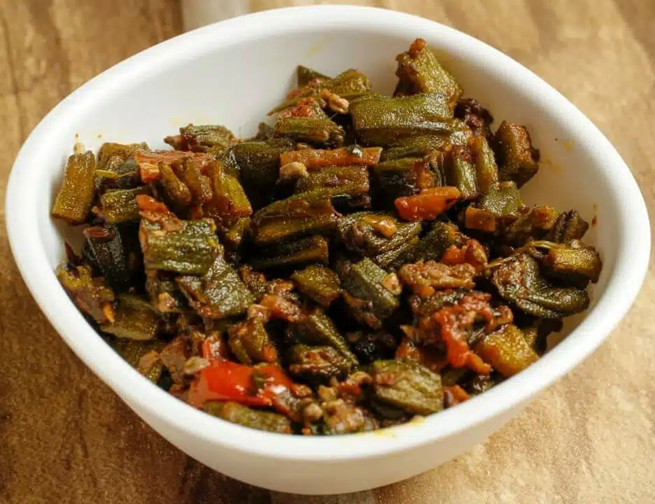

Bhindi Masala
Bhindi Masala is a spicy dish made from okra, tomatoes, onions and other spices. This dish originated in the Indian subcontinent and is popular in India, Pakistan, Bangladesh, Sri Lanka and Nepal.
Preparation time
- Total: Approximately 30 minutes
- Preparation: 20 minutes
Ingredients
- 250 g Bhindi (Okra) washed, dried with a dry cloth, chopped
- 2 tbsp Oil 1 Onion chopped
- 2 tsp Ginger Garlic Paste
- 1/2 tsp Green Chillies finely chopped
- 1/2 tsp Red Chilil Powder
- 1/2 tsp Garam Masala Powder 1/2 tsp Cumin Seeds
- 1/2 tsp Turmeric Powder
- 1/2 tsp Coriander Powder
- as per taste Salt
- little Coriander Leaves to garnish
Instructions
- step1: Heat 1 tblsp oil in a pan over medium flame. Add the chopped bhindis and saute for 2 to 3 minutes, stirring all the time. .
- step2: Sprinkle a bit of dry mango powder, if using and cook for 3 to 4 minutes. Remove and transfer to a bowl. Heat the remaining oil in the pan.
- step3: Fry the turmeric powder and cumin seeds for 20 seconds. Add the onions & tomatoes. Saute until onions turn light brown. Add the ginger garlic paste and green chillies.
- step3: Cook for 30 to 45 seconds. Add the garam masala powder, red chilli powder, coriander powder, salt and stir well. Add the reserved bhindis and cook for a minute or two. Sprinkle a little water if required.
- step4(enjoy): Remove and transfer to a serving bowl. Garnish with coriander leaves. Serve with rice, roti or naan
Nutrition
The table below shows nutritional values per serving without the additional fillings.
| Calories | 330kcal |
|---|---|
| Carbs | 50g |
| Protein | 18g |
| Fat | 7g |